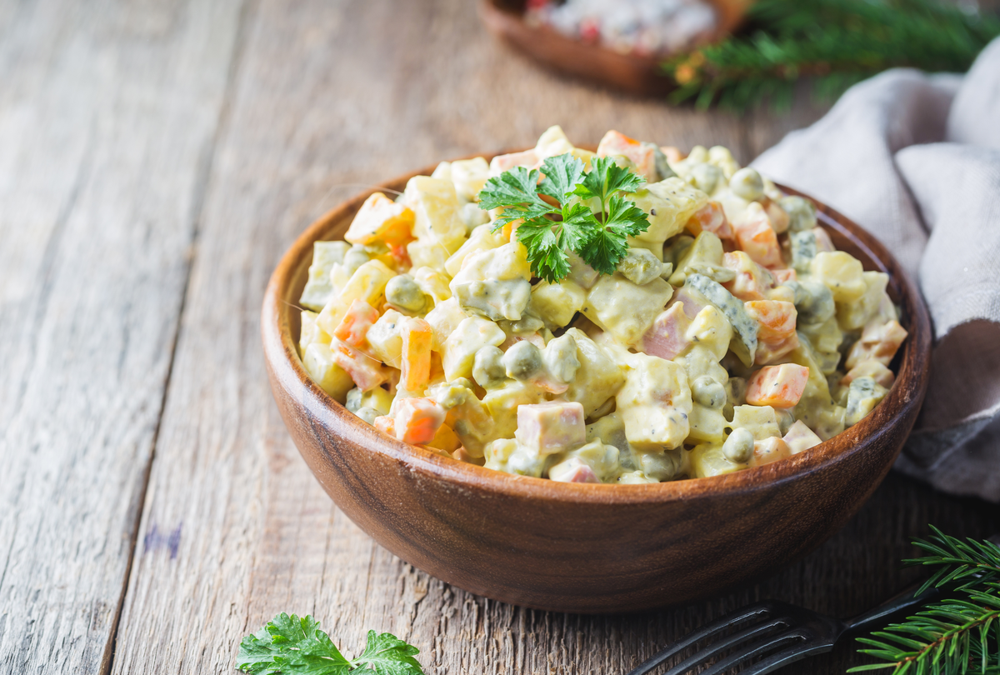

<link rel="stylesheet" href="../style.css">
<main>
    <h1>
        🥔 Maionese 🥚
    </h1>
    
    <h3>Tipicamente brasileira, a que não pode faltar em nenhum churrasco!</h3>
    <p>Quando estive em Portugal, nos supermercados existia a maionese e ela chamava-se "salada russa".</p>
    <p>O que me é estranho pois não sei se de fato, ela veio da Russia ou não... Mas, continua incrívelmente deliciosa!</p>
    <h4 class="ingredientes">Ingredientes</h4>
    <ul>
        <li>Algumas batatas (3 médias)</li>
        <li>1 maço de cebolinha</li>
        <li>Pimentões vermelhos e verdes</li>
        <li>1 cebola pequena</li>
        <li>1 frasco pequeno de maionese</li>
        <li>Sal e pimenta do pimenta-do-reino</li>
        <li>2 ovos cozidos (se quiser, mas também existe essa versão)</li>
    </ul>
    <h4>Modo de preparo</h4>
    <ol>
        <li>Cortar em pequenos pedacinhos as batatas já descascadas, ovos, cenoura e colocar em uma travesa.</li>
        <li>Corte a salsa e a cebola em pequenos pedaços também.</li>
        <li>Misture tudo com maionese, sal e pimenta do pimenta-do-reino a gosto.</li>
    </ol>
</main>